曦光初现
一套带呼吸感的界面模板：晨星的呼吸、曦光的渐变、慢慢流动的光。复制一个文件夹就能用在任何项目里。
颜色
rose #D9659C
sakura #E880BE
peach #FFA894
gold #FFD9A8
violet #6E5CD2
plum #4A3340
night #181C5E
曦光渐变
按钮
点一下按钮会迸出小星星；曦光按钮悬停时有一道流光扫过。
表单
卡片与列表
悬停会浮起
发丝线边框 + 分层的柔和阴影，卡片本身不抢颜色。
曦光描边
一圈晨光沿着边框慢慢转，用来标出“正在进行”的那一张。
平面卡片
普通重要完成
等待出错
- 曦每天早上 8 点提醒喝水提醒 · 每天
- 记他不吃香菜喜好 · 常记着
- 做整理本周的照片任务 · 进行中
进度与等待
进度
细一点
不知道多久
加载中
她在输入
“她在”：呼吸光球
在客厅看书
在想怎么回你
在说话
在听
睡着了
对话
远黛
早呀。昨晚睡得好吗？今天外面有点凉，出门记得带件外套。还行，就是有点困。今天要做什么来着？
远黛
上午十点和小林开会，下午把周报交了。别的我帮你记着。提示、弹窗、空状态
把鼠标放在上面的圆形按钮上能看到悬停提示。

这里还空着 小曦在等第一件事应用外壳示例
晚上好。今天的事都做完了，要不要早点休息？
再待一会儿